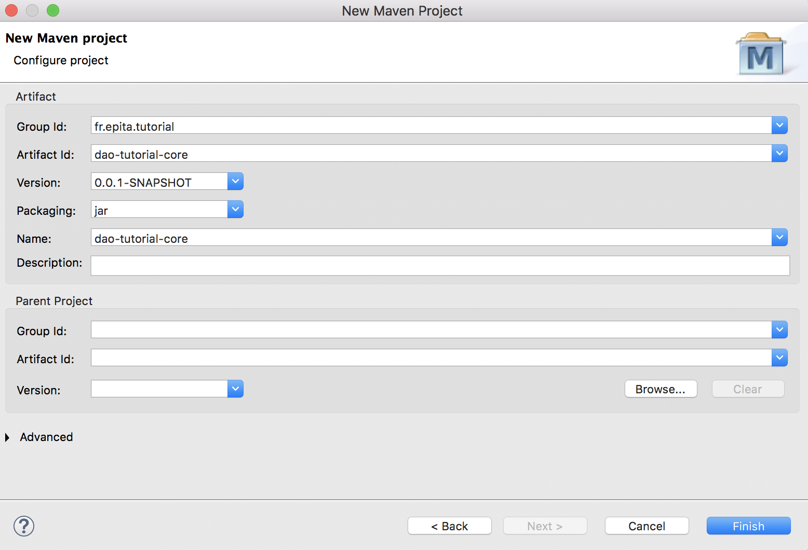
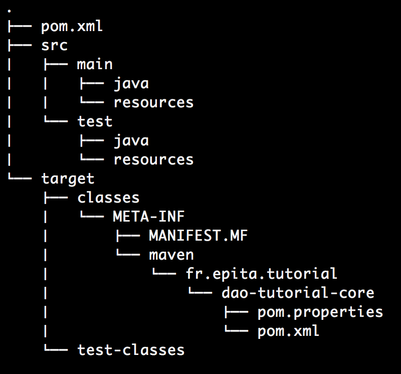
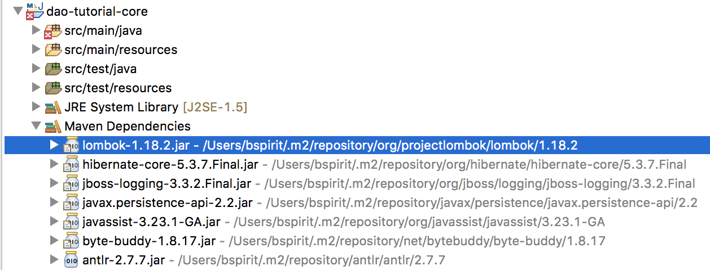
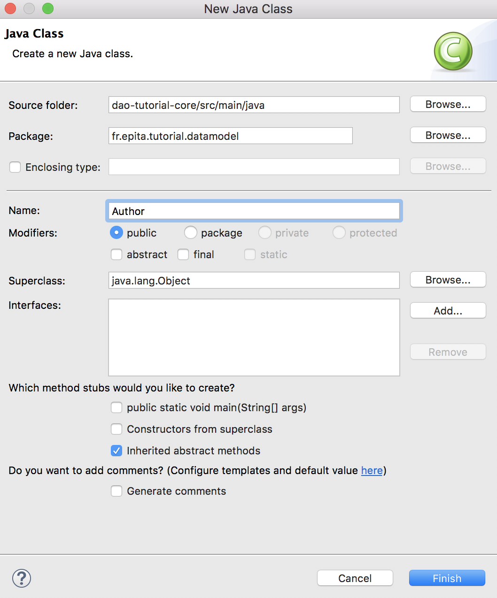

The purpose of this tutorial is to implement the DAO design pattern using Java and the JPA API.
All of the following code can be found in my public repository:
https://bitbucket.org/BSpirit/dao-tutorial-core/src/master/
In this part, we are going to set up the Java project using Eclipse IDE and Apache Maven software.
Eclipse is a popular IDE used in Java programming.
https://www.eclipse.org/downloads/
Apache Maven is a software project management and comprehension tool. Based on the concept of a Project Object Model (POM), Maven can manage a project’s build, reporting and documentation from a central piece of information.
Its main purpose for this tutorial will be to handle dependencies between librairies.
Open Eclipse IDE and create a new Maven Project:
File -> New -> Maven Project
Create a simple project option. This will create a basic, Maven-enabled Java project. If you require a more advanced setup, leave this setting unchecked, and you will be able to use more advanced Maven project setup features. Then, click
next.
finish.


The dependencies of the project can be found in the
pom.xml file located at the root of the project. To begin with, we are going to add
Lombok and
Hibernate dependencies:
<dependencies> block like so:
<dependency>
<groupId>org.projectlombok</groupId>
<artifactId>lombok</artifactId>
<version>1.18.2</version>
<scope>provided</scope>
</dependency>
<dependencies> block like so:
<dependency>
<groupId>org.hibernate</groupId>
<artifactId>hibernate-core</artifactId>
<version>5.3.7.Final</version>
</dependency>
<properties>
<maven.compiler.source>1.8</maven.compiler.source>
<maven.compiler.target>1.8</maven.compiler.target>
</properties>
pom.xml file should look like this:
<project xmlns="http://maven.apache.org/POM/4.0.0"
xmlns:xsi="http://www.w3.org/2001/XMLSchema-instance"
xsi:schemaLocation="http://maven.apache.org/POM/4.0.0
http://maven.apache.org/xsd/maven-4.0.0.xsd">
<modelVersion>4.0.0</modelVersion>
<groupId>fr.epita.tutorial</groupId>
<artifactId>dao-tutorial-core</artifactId>
<version>0.0.1-SNAPSHOT</version>
<name>dao-tutorial-core</name>
<properties>
<maven.compiler.source>1.8</maven.compiler.source>
<maven.compiler.target>1.8</maven.compiler.target>
</properties>
<dependencies>
<dependency>
<groupId>org.projectlombok</groupId>
<artifactId>lombok</artifactId>
<version>1.18.2</version>
<scope>provided</scope>
</dependency>
<dependency>
<groupId>org.hibernate</groupId>
<artifactId>hibernate-core</artifactId>
<version>5.3.7.Final</version>
</dependency>
</dependencies>
</project>
maven install command to set the project. In eclipse, you can right click on the
pom.xml file located at the root of the project and go to
Run As -> Maven install.
NOTE: When adding new dependencies, you may right click on the root of the project and go to
Maven -> Update Project to get the new dependencies.

java -jar lombok-1.18.2.jar to pursue Lombok installation. You may have to restart Eclipse.
Entities are POJO (Plain Old Java Object) class whose main purpose is to be mapped to relationnal database tables. In this part of the tutorial, we will use JPA API (thanks to Hibernate) and Lombok to easily create Entity classes.
Project Lombok is a java library that automatically plugs into your editor and build tools, spicing up your java.
Java Persistence API purpose is to persistently store the vast amounts of data into a database. Using JPA, the burden of interacting with the database reduces significantly. It forms a bridge between object models (Java program) and relational models (database program).
In this tutorial, we will use Hibernate ORM, as it is also an implementation of the Java Persistence API (JPA) specification.
To illustrate the DAO design pattern, we are first going to create two entities, an Author entity and a Book entity. Using
Javax.persistence and
Lombok, the code is very simple.
fr.epita.tutorial.datamodel package. Right click on
src/main/java and go to
new -> Class.

The code of the Author class is as simple as this !
@Entity
@Data
public class Author {
@Id
@GeneratedValue(strategy=GenerationType.AUTO)
private Long id;
private String firstName;
private String lastName;
}
The code of the Book class is as easy to write:
@Entity
@Data
public class Book {
@Id
@GeneratedValue(strategy=GenerationType.AUTO)
private Long id;
In these examples, several annotations are used to avoid writing redundant code:
Data is a Lombok annotation and allows auto generation of setters/getters and other utilities function such as
toString,
hashCode or
equals
Entity is used to create the binding between our class and the DB table
Id is used to specify which attribut is used as an ID inside the DB table
ManyToOne is used to specify the relation between our Book class and our Author class (this will also impact the DB tables)
The Data Access Object (DAO) pattern is a structural pattern that allows isolation of the application/business layer from the persistence layer (usually a relational database, but it could be any other persistence mechanism) using an abstract API.
The functionality of this API is to hide from the application all the complexities involved in performing CRUD operations in the underlying storage mechanism. This permits both layers to evolve separately without knowing anything about each other.
In this part of the tutorial, we will create simple DAOs allowing an easy access to our DB entities. We will also use dependency injection to help us instanciate the
DriverManagerDataSource and the
SessionFactory objects, which are both necessary to handle the DB connection.
Apache Log4j is a Java-based logging utility. It can be used to help debugging the application if necessary. It can be added as a maven dependency by updating your
pom.xml file:
<dependency>
<groupId>org.apache.logging.log4j</groupId>
<artifactId>log4j-api</artifactId>
<version>2.11.1</version>
</dependency>
<dependency>
<groupId>org.apache.logging.log4j</groupId>
<artifactId>log4j-core</artifactId>
<version>2.11.1</version>
</dependency>
To use Log4j, you have to create a configuration file. Create a file called
log4j2.xml in
src/test/resources/ and add this content:
<?xml version="1.0" encoding="UTF-8"?>
<Configuration status="WARN">
<Appenders>
<Console name="Console" target="SYSTEM_OUT">
<PatternLayout
pattern="%d{HH:mm:ss.SSS} [%t] %-5level %logger{36} - %msg%n"/>
</Console>
</Appenders>
<Loggers>
<Root level="info">
<AppenderRef ref="Console"/>
</Root>
</Loggers>
</Configuration>
https://logging.apache.org/log4j/2.x/
The Spring Framework is an application framework. In this part of the tutorial, it will be used for dependency injection using
inject</tt> annotation from @javax.injection. These can be added as maven dependencies by updating your
pom.xml file:
<dependency>
<groupId>javax.inject</groupId>
<artifactId>javax.inject</artifactId>
<version>1</version>
</dependency>
<dependency>
<groupId>org.springframework</groupId>
<artifactId>spring-test</artifactId>
<version>5.0.9.RELEASE</version>
<scope>test</scope>
</dependency>
<dependency>
<groupId>org.springframework</groupId>
<artifactId>spring-core</artifactId>
<version>5.0.9.RELEASE</version>
</dependency>
<dependency>
<groupId>org.springframework</groupId>
<artifactId>spring-context</artifactId>
<version>5.0.9.RELEASE</version>
</dependency>
<dependency>
<groupId>org.springframework</groupId>
<artifactId>spring-orm</artifactId>
<version>5.0.9.RELEASE</version>
</dependency>
fr.epita.tutorial.datamodel package, a generic DAO able to perform basic CRUD operations. Right click on
src/main/java and go to
new -> Class. The DAO code is as follow:
public abstract class DAO<T> {
protected static final Logger LOGGER = LogManager.getLogger(DAO.class);
protected Class<T> modelClass;
@Inject
@Named("sessionFactory")
private SessionFactory sf;
public void setmodelClass(Class<T> modelClass) {
this.modelClass = modelClass;
}
protected final Session getSession() {
Session session = null;
try {
session = this.sf.getCurrentSession();
} catch (Exception e) {
LOGGER.error(e);
}
if (session == null)
session = sf.openSession();
return session;
}
protected final Transaction getTransaction(Session session) {
Transaction tx = session.getTransaction();
if (!TransactionStatus.ACTIVE.equals(tx.getStatus()))
tx = session.beginTransaction();
return tx;
}
public final Long create(T obj) {
Session session = this.getSession();
Transaction tx = this.getTransaction(session);
Long id = (Long) session.save(obj);
tx.commit();
return id;
}
public final void delete(T obj) {
Session session = this.getSession();
Transaction tx = this.getTransaction(session);
session.delete(obj);
tx.commit();
}
public final void update(T obj) {
Session session = this.getSession();
Transaction tx = this.getTransaction(session);
session.update(obj);
tx.commit();
}
public T getById(Long id) {
return getSession().get(modelClass, id);
}
@SuppressWarnings("unchecked")
public List<T> getAll() {
return getSession().createQuery("from " +
modelClass.getName()).list();
}
public abstract List<T> search(T criteria);
}
In the previous exemple:
SessionFactory object is used to create Sessions and Transactions with the DB. We will see later how to configure it.
getSession and
getTransaction methods are used to avoid Sessions or Transactions duplication.
create,
update,
update,
getById and
getAll methods perform the basic CRUD actions. As you can, we don’t even need to know what the data looks like thanks to genericity.
Because this DAO class is abstract, it cannot be instantiated. Specific DAOs must be created for each entity and can be used to specify some behaviors, which might depends on the entity itself:
@Repository
public class AuthorDAO extends DAO<Author> {
public AuthorDAO() {
this.setmodelClass(Author.class);
}
@Override
public List<Author> search(Author criteria) {
String searchQuery = "from Author as a " +
"where a.firstName like :firstName or " +
"a.lastName like :lastName";
Session session = this.getSession();
Query<Author> query = session.createQuery(searchQuery, Author.class);
query.setParameter("firstName", "%" + criteria.getFirstName() + "%");
query.setParameter("lastName", "%" + criteria.getLastName() + "%");
return query.list();
}
}
@Repository
public class BookDAO extends DAO<Book> {
public BookDAO() {
this.setmodelClass(Book.class);
}
@Override
public List<Book> search(Book criteria) {
String searchQuery = "from Book where author = :author";
Query<Book> query = getSession().createQuery(searchQuery, Book.class);
query.setParameter("question", criteria.getAuthor());
return query.list();
}
}
In the previous examples:
Query object.
setParameter to make a binding using the criteria variable.
Query as a list.
The
BookDAO and
AuthorDAO are both using dependency injection to instantiate the
SessionFactory object. As a result, these objects have to be managed by the Spring IoC container. These objects can be refered as «beans». These beans are created with the configuration metadata supplied, for example using an XML file.
Let’s create this XML file:
applicationContext.xml in
src/test/resources and add this content inside:
<beans xmlns="http://www.springframework.org/schema/beans"
xmlns:xsi="http://www.w3.org/2001/XMLSchema-instance"
xmlns:context="http://www.springframework.org/schema/context"
xmlns:mvc="http://www.springframework.org/schema/mvc"
xsi:schemaLocation="http://www.springframework.org/schema/beans
http://www.springframework.org/schema/beans/spring-beans.xsd
http://www.springframework.org/schema/context
http://www.springframework.org/schema/context/spring-context.xsd
http://www.springframework.org/schema/mvc
http://www.springframework.org/schema/mvc/spring-mvc.xsd">
<context:component-scan
base-package="fr.epita.tutorial.services.data"/>
<bean id="dataSource"
class="org.springframework.jdbc.datasource.DriverManagerDataSource">
<property
name="url"
value="jdbc:h2:mem:test;DB_CLOSE_DELAY=-1">
</property>
<property
name="username"
value="test">
</property>
<property
name="password"
value="test">
</property>
<property
name="driverClassName"
value="org.h2.Driver">
</property>
</bean>
<bean id="hibernateProperties"
class="org.springframework.beans.factory.config.PropertiesFactoryBean">
<property name="properties">
<props>
<prop key="hibernate.dialect">
org.hibernate.dialect.H2Dialect
</prop>
<prop key="hibernate.show_sql">
true
</prop>
<prop key="hibernate.hbm2ddl.auto">
update
</prop>
<prop key="hibernate.connection.autocommit">
false
</prop>
</props>
</property>
</bean>
<bean id="sessionFactory"
class="org.springframework.orm.hibernate5.LocalSessionFactoryBean">
<property
name="dataSource"
ref="dataSource" />
<property
name="hibernateProperties"
ref="hibernateProperties" />
<property
name="packagesToScan">
<list>
<value>fr.epita.tutorial.datamodel</value>
</list>
</property>
</bean>
</beans>
Let’s explain this configuration a little bit more:
<context:component-scan base-package="fr.epita.tutorial.services.data" /> is used to scan the given package in order to make the
BookDAO and
AuthorDAO classes recognizable as Beans and injected.
<bean id="sessionFactory" class="org.springframework.orm.hibernate5.LocalSessionFactoryBean"> is used to instantiate the
SessionFactory object.
dataSource@and @hibernateProperties to be instantiated.
In this session, we are going to use JUnit to test some of the CRUD operations and demonstrate how dependency injection works.
H2 is a relational database management system written in Java. It can be embedded in Java applications or run in the client-server mode. It will be used to store our data. It can be added as a maven dependency by updating your
pom.xml file:
<dependency>
<groupId>com.h2database</groupId>
<artifactId>h2</artifactId>
<version>1.4.197</version>
<scope>test</scope>
</dependency>
http://www.h2database.com/html/main.html
JUnit framework will be used for unit tests. It can be added as a maven dependency by updating your
pom.xml file:
fr.epita.tutorial.services.test package. Right click on
src/test/java and go to
new -> Class. The code is as follow:
@RunWith(SpringJUnit4ClassRunner.class)
@ContextConfiguration(locations = "/applicationContext.xml")
public class TestJPA {
private static final Logger LOGGER = LogManager.getLogger(TestJPA.class);
@Inject
AuthorDAO authorDAO;
@Inject
BookDAO bookDAO;
@Before
public void addAuthor() {
Author author = new Author();
author.setFirstName("Philip");
author.setLastName("K. Dick");
authorDAO.create(author);
}
@Test
public void testAuthorDAOCreateGetById() {
// Given
Author author = new Author();
author.setFirstName("Stephen");
author.setLastName("King");
// When
Long id = authorDAO.create(author);
// then
author = authorDAO.getById(id);
LOGGER.info(author);
Assert.assertEquals("Stephen", author.getFirstName());
Assert.assertEquals("King", author.getLastName());
}
@Test
public void testAuthorDAOSearchUpdate() {
// Given
Author author = new Author();
author.setFirstName("Philip");
author = authorDAO.search(author).get(0);
// When
author.setFirstName("Howard");
author.setLastName("Lovecraft");
authorDAO.update(author);
// Then
author = authorDAO.search(author).get(0);
LOGGER.info(author);
Assert.assertEquals("Howard", author.getFirstName());
Assert.assertEquals("Lovecraft", author.getLastName());
}
@Test
public void testAuthorDAODeleteGetAll() {
// Given
List<Author> authors = authorDAO.getAll();
// When
for (Author author : authors)
authorDAO.delete(author);
// Then
authors = authorDAO.getAll();
LOGGER.info(authors);
Assert.assertEquals(0, authors.size());
}
}
In the previous example:
@RunWith(SpringJUnit4ClassRunner.class)
@ContextConfiguration(locations = "/applicationContext.xml")
Inject</tt> annotation is used for dependency injection and allow the instantiation of @BookDAO,
AuthorDAO and their corresponding
SessionFactory object.